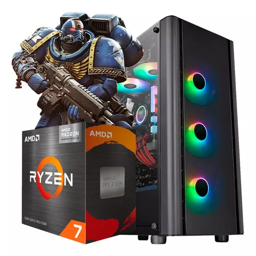

Precio: $510.000
LAS IMÁGENES SON DE CARÁCTER ILUSTRATIVO
Pc Armada Modelo 'DT-00CS16D-8700G-780M'
-CPU: AMD RYZEN 7 8700G RADEON (8C/16T)
-Motherboard: A620M-E PRO MSI DDR5 AM5
-Memoria RAM: DDR5 8GB 5200MHZ KINGSTON CL42 1.1V (Cant: 2)
-Video: AMD Radeon 780M 12CU RDNA3 ( Integrado )
-Disco Solido (M.2): 500GB WD GREEN SN350 NVMe (Cant: 1)
-Gabinete: SENTEY GF10 Lateral Transparente X10
-Fuente: 600W REDRAGON 80+ BRONZE RGPS
Benchmarks:
AMD Ryzen 7 8700G 8 Nucleos / 16 Hilos (Dual Channel) :
-Geekbench 6 : 2734 (Single Core)
-Geekbench 6 : 13099 (Multi Core)
AMD Radeon 780M (8700G) (Dual Channel) :
-Geekbench 6 : 36418 (Vulkan)